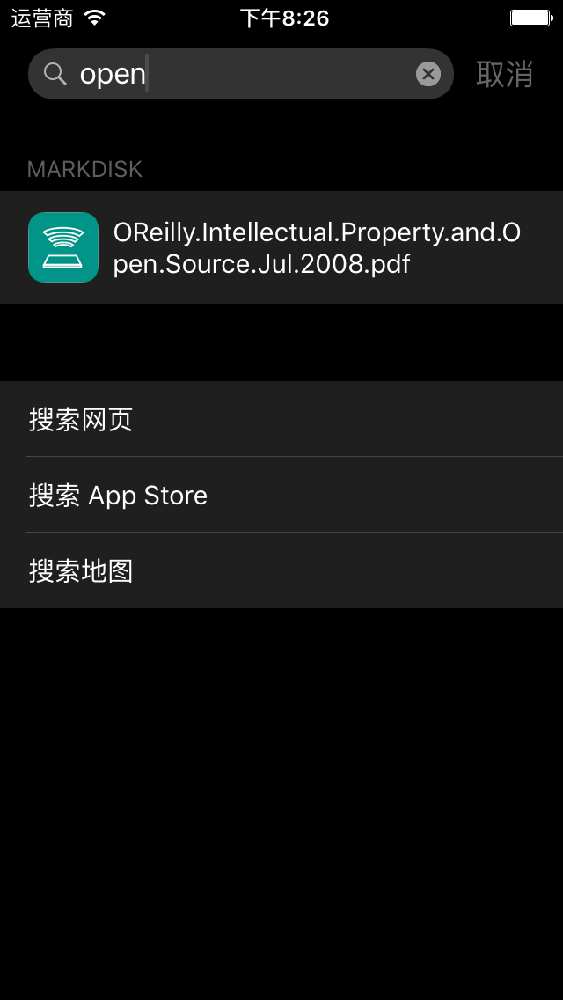
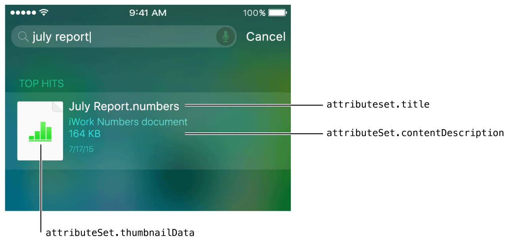
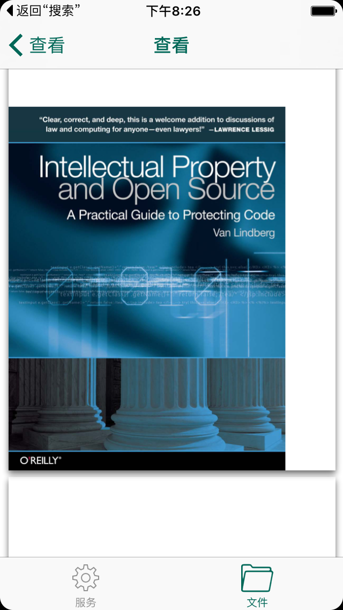

Core Spotlight:从概念到实战
tags:开发随笔
很早就知道iOS9有了新的Search API，不过一直都没有机会使用。今天刚好想在MarkDisk 中加入搜索功能，于是快速看了一下，并且成功实施。最终的效果如下：

概述
iOS 9 Search API概述
iOS 9 提供了两种索引方式:
- 私有设备索引(private on-device index)。每一台iOS设备都有一个私有的索引，这个索引从来不与Apple或者在设备间共享。私有设备索引上条目只有用户可以搜到。此索引可以通过CSSearchableIndex defaultSearchableIndex]得到。
- Apple的服务器端索引。服务器索引只存储网站上被恰当的标志过的数据。
iOS9的新Search API主要有以下三点：
在
NSUserActivity类中提供了新的方法和属性来创建针对用户活动的索引项，这些活动包括如打开了导航点，或创建并查看内容等事件。- Core Spotlight框架，供应用在私有设备索引上创建相关内容的索引，并实现指向应用内的深层链接。
- Web标记，让应用相关的网页内容变得可被搜索，从而丰富用户的搜索体验。
除了核心Search API， Apple还推荐使用下面三种技术和Search API一起使用，来提高用户搜索体验：
- 通用链接。iOS中9之后，使用基于标准的HTTP或HTTPS的通用链接，来取代自定义URL方案。通用链接可以支持所有用户，不管他们是否安装了应用(如果用户已经安装了应用，链接直接打开应用;如果他们没有安装应用，链接会用Safari打开你的网站)。这篇博文介绍了通用链接的概念。
- 智能应用横幅。当用户使用Safari浏览器访问你的网站的时候，智能应用横幅广告可以打开你的应用，或有机会让用户下载你的应用。
- Handoff。Handoff可以让用户可以从一台设备到另一台设备继续工作。
Core Spotlight 框架
Core Spotlight框架用来索引应用内的内容。它创建的索引存储在设备上，不与Apple共享，也不能被其他应用或者设备访问。
Apple的指南中特别提到Core Spotlight创建的索引最好在几千的数量级别之下。索引太多很有可能会带来性能问题。
索引的创建是通过两个类完成的：
CSSearchableItemAttributeSet：索引属性集合，也即是索引的内容本身。集合中可以存储以下属性：title, contentDescription, thumbnailData, rating, keywords.下面这张图显示了Spotlight是如何通过这些属性展示搜索结果的:

CSSearchableItem：用来表示一个被索引的条目，通过来可以关联到应用内的记录。CSSearchableItem依赖于，它在构建的时候需要传入一个
CSSearchableItemAttributeSet对象。
实战
目标
MarkDisk 是笔者开发的一款免费的iOS原生应用，它可以将iPhone变成一个运行HTTP服务的文件服务器，用户可以使用PC浏览器将文件(文档／图片／视频等)上传到iPhone中，并创建目录将文件管理起来。在这里有一个简单的介绍。
这次增强的目标是：让用户可以在iOS中通过文件名中包含的词语搜索MarkDisk中存储的文件，并且可以打开并浏览对应的文件。
分析
问题的关键是针对文件信息的索引的创建和管理。可以将这个任务分解为以下几个子任务：
- 给文件创建索引。
- 在文件改变时更新索引。因为MarkDisk暂时不支持文件剪切，问题变得简单，只需要考虑文件删除的情形即可。
- 响应链接的打开。
- ID问题。Spotlight需要给每一个
CSSearchableItem设置一个唯一的ID。考虑到MarkDisk主要管理文件，我直接用文件的路径作为唯一ID，这样会更方便进行处理。考虑到每次应用升级时其绝对路径会改变，我采用文件相对于Documents目录的路径作为唯一ID。 - 索引的内容。如前所叙，Spotlight可以记录标题(title), 描述（contentDescription），缩略图(thumbnailData)， 等级(rating), 关键词（keywords），考虑到我只是想让用户搜索到应用内管理的文件，缩略图可以省掉（缺省情况下Spotlight会在搜索显示应用），标题可以直接用文件名，等级对我来说没有意义，关键词暂时也可以不用。
代码实现
引用spotlight所需要头文件
在需要的地方引用以下两个头文件
#import <CoreSpotlight/CoreSpotlight.h> #import <MobileCoreServices/MobileCoreServices.h>
索引创建
在FileItem类中加入以下方法，这个方法先创建一个CSSearchableItemAttributeSet，然后通过它创建CSSearchableItem，最后将CSSearchableItem放入设备中：
-(void) buildSearchableItem{
CSSearchableItemAttributeSet* attributeSet = [[CSSearchableItemAttributeSet alloc] initWithItemContentType:(NSString*)kUTTypeText];
attributeSet.title = self.name;
CSSearchableItem *item = [[CSSearchableItem alloc] initWithUniqueIdentifier:
[self indexPath]
domainIdentifier:@"markdisk.file" attributeSet:attributeSet];
[[CSSearchableIndex defaultSearchableIndex] indexSearchableItems:@[item] completionHandler:^(NSError * error) {
if (error) {
NSLog(@"buildSearchableItem Error:%@",error.localizedDescription);
}
}];
}
这里使用markdisk.file作为domain ID。
索引的删除
在文件被删除时，使用如下的代码根据其相对路径删除其对应的索引:
[[CSSearchableIndex defaultSearchableIndex] deleteSearchableItemsWithIdentifiers:@[[_itemToRemove indexPath] ] completionHandler:^(NSError * _Nullable error) {
if (error) {
NSLog(@"%@", error.localizedDescription);
}
}];
这里_itemToRemove indexPath]可以返回文件的相对路径。deleteSearchableItemsWithIdentifiers需要传入一个数组，所以将一个索引放入数组中：@[[_itemToRemove indexPath] ]
CSSearchableIndex类提供了三个方法来删除索引:
- deleteSearchableItemsWithDomainIdentifiers:completionHandler: - deleteSearchableItemsWithIdentifiers:completionHandler:
分别删除应用所创建的所有索引，按domain ID删除索引，按ID删除索引。
响应搜索结果
在用户选中搜索结果时，程序要打开对应的文件。
要实现这个目标，只需要在AppDelegate中实现continueUserActivity方法。我的实现如下：
- (BOOL)application:(UIApplication *)application continueUserActivity:(NSUserActivity *)userActivity restorationHandler:(void (^)(NSArray * _Nullable))restorationHandler {
if ([[userActivity activityType] isEqualToString:CSSearchableItemActionType]) {
//获取唯一ID，在MarkDisk中，它即是文件的相对路径
NSString *uniqueIdentifier = [userActivity.userInfo objectForKey:CSSearchableItemActivityIdentifier];
//显示对应的文件，代码略
...
}
return YES;
}
显示文件的效果如下：

总结
本文总结了Spotlight的相关概念和使用方法。
MarkDisk新版本已经提交，应该一周左右可以上线。